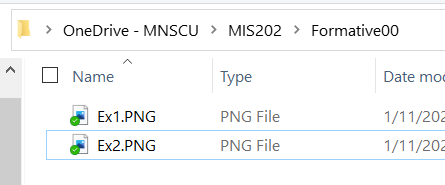
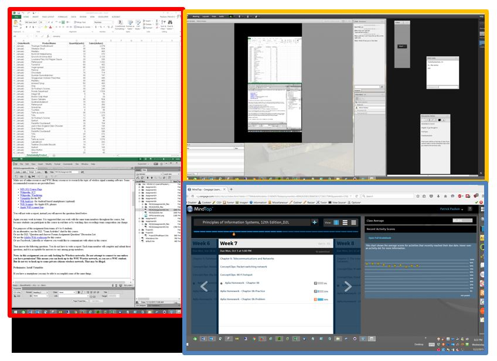
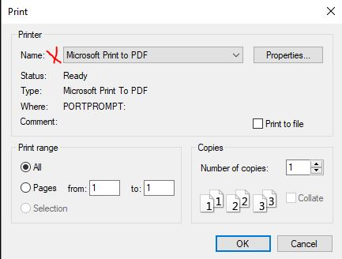
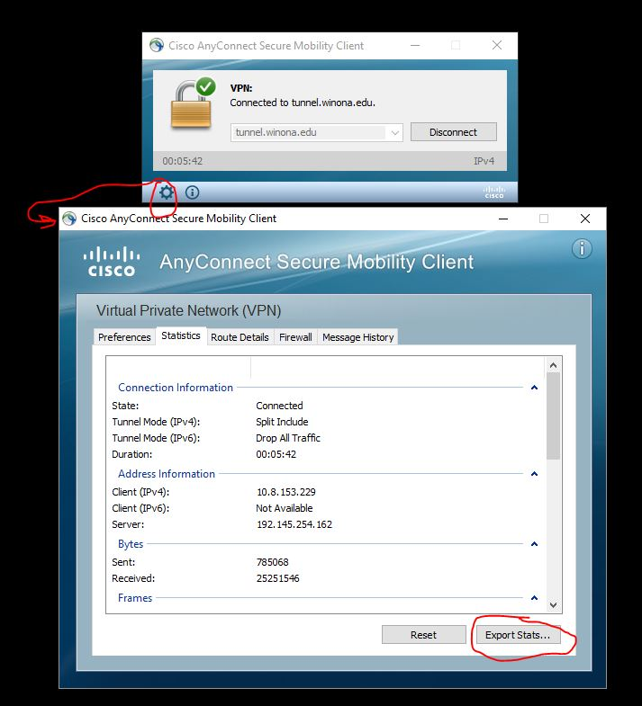
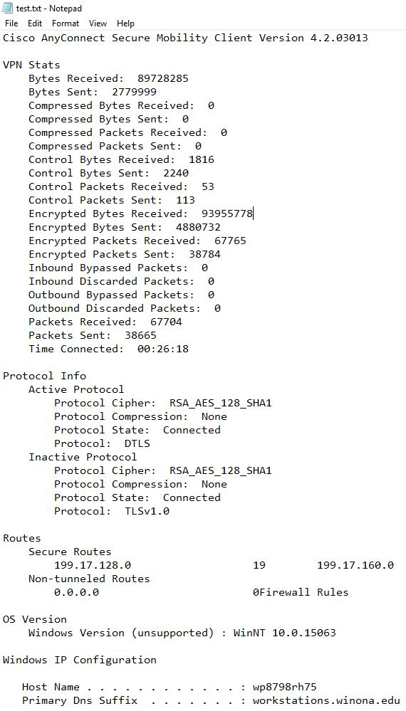

Before proceeding you MUST have OneDrive for Business (OneDrive - MNSCU) installed and configured.
Install it per the resources in the Assignment Overview above.
You will learn to use OneDrive for Business to create folder structures to organize your work for this class, such as screen shots to prove you have completed Exercises.
These items will be stored on your laptop, and One Drive for Business will handle making automatic backup copies of all your work to the cloud.
As long as you follow these instructions you will not lose any work.
During this course you will use Windows File Explorer to create a series of folders in OneDrive with paths such as: '
Create two nested folders in OneDrive, one for this course, one for this assignment.
Remember-no spaces in file or folder names-only use 'a-Z', '0-9' and the underscore character.
When done, OneDrive will look like the image below, but with the appropriate course:

OneDrive Folder
Note: click images to view larger version in separate tab
You will be using this folder structure for organizing screen shots and other working documents throughout this course.
If you are not familiar with Windows File Explorer please review this LinkedIn Learning course, ' Windows 10: Organizing Files and Folders '
(25) 1. Use the Snipping Tool to make a screen shot of File Explorer, showing the Formative00 folder that you just created for this course.
Save the screen shot as "Ex1" in your '
It can be a .jpg, .png or other appropriate image file format.
Screen Shot Ex1
To succeed in this course, and in your career, it is essential that your computer (hardware and software) is functioning correctly.
In this exercise you will perform a hardware check. At the end of Formative00, Part 3 you are advised to update your software.
Before you perform a hardware check, make sure to connect your laptop to a power supply and restart it, applying any updates.
- After your computer has restarted, click Start, type in
HP PC Hardware
Note: if not found, or to install latest version, visit this website to download: HP Hardware Diagnostics
- Press Enter
- Select 'System Tests', 'System Fast Test', then click 'Run Once'
- A series of tests will check your hardware performance.
If any test fails, go to tech support in Somsen 207 for assistance in resolving the problem.
HP PC Hardware application interface
Note- other in-depth testing and computer information is available using the HP Support Assistant.
Do not forget to check Software Center (Start, type 'Software Center') for the latest Windows and other updates.
(25) 2. Use the Snipping Tool to make a screen shot of the 'HP PC Hardware Diagnostics Window' showing that your laptop 'Passed' ALL tests.
Save the screen shot as "Ex2" in your '
' folder.
It can be either a .jpg or .png file.
Screen Shot Ex2
Ultrabooks are being built with fewer, but increasingly functional ports.
The WSU lease models are equipped with Thunderbolt (USB Type-C) ports that can provide connections to 2 external monitors, a wired network, and power-among other things.
As a result, you can plug your laptop into a USB Type-C dock with one cable and begin to work.
Note: after plugging your laptop into the USB Type-C dock, make sure that the 'Wired' connection icon is visible in the lower right 'Task Tray'.
Wired Network Connection
If the wired network icon does not appear when connected to a Somsen 301 USB Type-C dock, contact a TA or the professor for assistance-there is something wrong with your laptop, it may need a driver update, or more.
Why are additional monitors necessary? Some reasons:
- Conveniently run multiple software applications on separate monitors
- Easily copy and paste data between open applications
- Participate in a web conference while also running other applications
- Watch class recordings while also running other applications
- Be able to keep Outlook open in one monitor at all times
To setup, use and disconnect an external monitor from your laptop follow the instructions below.

Three monitors, outlined in red, orange and blue.
When using external monitors you can have a 'public' and 'private' display. The primary laptop display can be private, viewable only by the user. The external monitors can be public, viewed by others. This allows the user to view class notes, email, Desire2Learn information privately on their laptop. The user can publicly share a website or spreadsheet.
- Connect the USB-Type C cable to the appropriate port, depending on your laptop model. See the teacher or TA if you need assistance.
- Right click a blank area of your desktop and choose 'Display settings', the Settings dialog box will appear.
- Refer to the figure below and adjust the settings to position and orient your monitors correctly. You may need to click the 'Apply' button several times during this process.
Note that:
- If three monitors do not appear, click the 'Detect' button.
- Under 'Multiple displays' all three should be set to 'Extend desktop to this display'
- Click the 'Identify' button to find the number of each monitor.
- "Monitor 1" should be your laptop display
- "Monitor 2 or 3" will be your external displays, and should be positioned above or to the left of your laptop.
- The final monitor should be postitoned and rotated as required.
- In the graphic, select your portrait monitor.
- Under 'Orientation' select 'Portrait'.
- Click 'Apply' in the lower right.

Individual display settings
Display Setting Controls
- As necessary drag the monitors into the correct physical location as depicted in the 'Select and Arrange Displays' section at the top of the Settings dialog box. Then click 'Apply' to accept the changes. You may need to repeat this procedure.
- To test that you have configured your monitors correctly you should be able to move the Settings dialog box between all three monitors seamlessly by clicking and dragging on the dialog box title bar. Repeat the above steps as necessary until you can do this.
- Close the dialog box.
Display content on all three monitors, such as websites.
(25) 3. Use the Snipping Tool in 'Full-screen Snip' Mode to make a screen shot of all three monitors.
Save the screen shot as "Ex3" in your '
Screen Shot Ex3
PDFill combines .pdf files that you will be creating during this course into one file.
Download a copy of PDFill.exe from Professor Paulson's OneDrive - MNSCU 'ReadOnly' folder.
Double-click PDFill.exe to begin the installation process.
- Install PDFill, but select only "FREE PDFill PDF Tools (No Watermark)" option

After installing PDFill open the Control Panel.
In the upper right corner click the drop-down arrow and select 'Small Icons'.
Make sure you are at 'Control Panel>All Control Panel Items>Programs and Features'
Make the window big enough to view all the icons.
(25) 4. With the Snipping Tool make a screen shot of the Control Panel window showing the PDFill icon.
Use the Yellow Highlighter Tool to highlight the 'PDFill' software icon.
Save the screen shot as "Ex4" in your '
Screen Shot Ex4
You will create one .pdf (portable document format) file from the screen shots taken above.
Make sure you have Windows 10 installed, and you have the option 'Microsoft Print to PDF' in the Print Dialog Box.
If not, contact a TA or the professor.

Print dialog box
- Open File Explorer, navigate to your '
Make sure the screen shot files are properly named (Ex1, Ex2, Ex3 , Ex4.. )
- Select all of the screen shots.
- Right Click and select 'Print' from the pop-up menu.
- In the bottom center of the 'Print Pictures' dialog box uncheck the box "Fit picture to frame"
- Click on 'Print' and save the file with the name "Formative00_Part1.pdf" in your '

- You have created a PDF file that contains all 4 screen shots. It is viewable in your Chrome browser, or using Adbobe Acrobat Reader.
Do not worry about the order of the screen shots, nor the rotation.
(25) 5. Upload your 'Formative00_Part1.pdf' file to the D2L 'Formative00_Part1' Assignment folder.
Download and install Visual Studio to create and maintain a website, which is how to complete assignments.
- Obtain Visual Studio 2019 Enterprise, 64-bit-download from the Microsoft Azure DevTools for Teaching website.
Username is: StarID@go.minnstate.edu
- While Visual Studio downloads, continue with the steps below.
- Retrieve and copy your Product Key from the Azure DevTools website.
- Using NotePad create a file named 'ProductKey.txt'
- Paste your Product Key into the file 'ProductKey.txt'
(50) 6.
Save this file as "ProductKey.txt" in your '
Install Visual Studio 2019.
- Please install the ASP.NET and web development, and the Python development modules.

- Install the Visual Studio GitHub Extension. From the menu select Extensions>Manage Extensions and search for GitHub Extension

- Visual Studio Settings
Open Visual Studio, under Tools>Options change the following settings to ensure your development environment is optimized for this class.
 Check 'Line numbers'
Check 'Line numbers'
 Enable 'Web Forms designer'
Enable 'Web Forms designer'
- Update Visual Studio as required
Periodically updates will be available for Visual Studio or add-ins.
You are notified by the red icon and bell in the lower-right.
Install updates outside of class, as they can take time.
Note that you do not have to sign into your Minnstate account to use Visual Studio.
- From the Visual Studio menu choose Help> Register Product.
- Enter your Product Key into Visual Studio to complete product registration.
If you do not install your product key, after 30 days your license expires and you will see this message, after which Visual Studio will no longer work:

After installing Visual Studio use File Explorer to navigate to the folder
Use the Snipping Tool to make a screen shot of the file ProductKey.txt with the preview pane active.
It will look like this:
.
(50) 7. Save the screen shot as "Ex5" in your '
Screen Shot Ex5
- Browse to https://minnstate.zoom.us/ Click the 'Download Client' link at the bottom of the page to install the latest Zoom Client for meetings.
- Click the 'Sign in' button, your username is
StarID@go.minnstate.edu ; password is your WSU network password
- Note: your Single Sign On screen may be slightly different

- From the D2L 'Course Info' widget click on the url for the web conference.
eProfessor Zoom Room-https://minnstate.zoom.us/my/eprofessor
Note: if doing this assignment outside of class time, log into your personal Zoom room.
- Under Settings>General, check 'Always show meeting controls'
The meeting control toolbar will appear at the bottom of your Zoom meeting window-see screen shot in next step.
- On the meeting controls, open the Participants and Chat windows
In your Zoom account, click the
'Profile' on the left side and view your profile.
Make the window big enough to view at least the information shown below.
(25) 8. Use the Snipping Tool to make a screen shot of your profile.
Save the screen shot as "Ex6" in your '
Screen Shot Ex6
All course assignments are listed in the D2L calendar.
Follow these steps to see course assignment due dates.
- Log into D2L and load this course.
- Click on 'Calendar' or 'Materials>Calendar' from the menu.

- Click on the 'List' icon.
Click the arrow until 'All events' appears.

- All graded items for this course are listed in due date order.
(25) 9. Take a screenshot of D2L showing the first few assignment due dates using the Snipping tool.
Save the screen shot as "Ex7" in your '
Screen Shot Ex7
You will create one .pdf (portable document format) file from the three screen shots (Ex5, Ex6, Ex7).
- Open File Explorer, navigate to your '
make sure the screen shot files are properly named(Ex5, Ex6, Ex7.. )
- Select all of the screen shots.
- Right Click and select 'Print' from the pop-up menu.
- In the bottom center of the 'Print Pictures' dialog box uncheck the box "Fit picture to frame"
- Click on 'Print' and save the file with the name "Formative00_Part2.pdf" in your '
- You have created a PDF file that contains all 3 screen shots. It is viewable in your Chrome browser, or using Adbobe Acrobat Reader. Do not worry about the order of the screen shots, nor the rotation.
(25) 10. Upload your 'Formative00_Part2.pdf' file to the D2L 'Formative00_Part2' Assignment folder.
This MUST be done while you are off-campus, or in Somsen 301 using the USB-C dock with the network patch cable designated as 'HBC VPN', which is located by the teaching station.
If your laptop is wired to the WSU network or connected to the WSU wireless network (Warrior or Wazoo) it will not be able to connect to the VPN.
First read (and later refer to) these instructions on connecting to the WSU VPN: https://learn.winona.edu/wiki/VPN
Note: For additional assistance, and if the above hyperlink does not work, search the WSU website for "Cisco VPN"
The following instructions are for use when in Somsen 301.
- Turn off your Wi-Fi on your laptop.
- Connect to the HBC VPN USB Type-C 3.1 cable that attaches to the HP dock
- Wait a few seconds, do a Google search to check your IP address.
- Click the Windows button, type "Cisco AnyConnect" and press enter to bring up the login dialog box.
- Click the 'Connect' button, in the Username box enter your StarID, enter your WSU network password, and click 'OK':

- After a few seconds the dialog box will minimize and an icon will appear in the Task Tray.
Double click it to open the dialog box. Then click the 'gear' in the lower left to show the Statistics.

- Click the 'Export Stats...' button, save the file 'test.txt' in the folder '
- Open test.txt and print it as a pdf file named Ex8.pdf
It will look like this:

(25) 11. Make sure to print the Cisco VPN Statistics file as 'Ex8.pdf'' and save it in the folder '
Print PDF file Ex8
Examine the top of this page, and notice that the First Name field contains MyFirstName, the Last Name field contains MyLastName, the StarID field contains MyStarid, and the Email field contains MyStarID@go.minnstate.edu.
In this exercise you will personalize this and all other assignments for this class by updating a constants.js file that resides in the root folder of your assignment website.
This demonstrates the power of coding-to save time and add functionality.
Java Script and VB Script is being used behind the scenes in this course.
Note: if you are off-campus you will need to connect to the WSU VPN per the previous exercise, and then map your network drives.
Once you are connected to the WSU network you can use File Explorer to navigate to different drives such as
C: which is the SSD-Solid State Drive in your laptop
R: which is your personal network storage space-but may soon be replaced by OneDrive for Business
T: which is a network drive that contains folders for any of your courses which have requested network storage (like this one)
- Using File Explorer, navigate to the T: drive for this class, and find the folder with your network username.
- Inside this folder is a file named constants.js
- Open this file using Notepad, and carefully enter your first name, last name and StarID in the places indicated.
Be careful not to delete any punctuation marks.
- Then Save this file in the same location.
- Refresh your browser ( Ctrl + F5 ), and check to make sure your name appears correctly at the top of this assignment.
- If your first name, last name or StarID is incorrect, make sure to fix it-the proper submission of all your work in this course depends on it.
- If you still see 'MyFirstName' instead of your first name on this page, it is time to begin troubleshooting.
Use the Snipping Tool to make a screen shot of File Explorer with the Preview Pane active, showing the constants.js file in the T: drive folder that you just updated using NotePad.
It will look like this:
constants.js File
(50) 12. Save the screen shot as "Ex9" in your '
It can be a .jpg, .png or other appropriate image file format.
Screen Shot Ex9
Publications:
To keep informed, you are strongly encouraged to read the many magazines available to you at no charge through Flipster.
Through the Krueger Library, you have access to online versions of The New York Times, The Wall Street Journal, and Flipster magazines.
Instructions are below. If you have questions, please contact the Krueger Library.
New York Times:
1) Click on this link: https://libguides.winona.edu/az.php?a=n
2)
From the list choose “New York Times (Institutional Subscription)”
3) For your username, use your StarID@winona.edu. Then choose a password and indicate that you are “Student”. Choose your graduation year.
4) You may also have access to the NYT app through WSU Apps.
*To subscribe, you must sign up on campus.*
(25) 13. After subscriping to the New York Times, login and take a screenshot of the current edition's home page using the Snipping tool.
Save the screen shot as "Ex10" in your '
Screen Shot Ex10NYT
Wall Street Journal
1) Click on this link: Wall Street Journal and search for 'Wall Street Journal', follow the instructions.
2) Enter your StarID and the password associated with your StarID
3) Follow the instructions and fill out the subscription form
4) Users with an existing account have the option to connect to the institutional subscription at the bottom of the “Create Account” page.
5) Repeat these steps every 180 days.
You may also have access to the WSJ app through WSU Apps.
(25) 14. After subscribing to the Wall Street Journal, login and take a screenshot of the front page using the Snipping tool.
Save the screen shot as "Ex10WSJ" in your '
Screen Shot Ex10WSJ
(25) 15. After accessing Flipster, open the latest issue of Wired magazine and take a screenshot of the cover using the Snipping tool.
Save the screen shot as "Ex10Flip" in your '
Screen Shot Ex10Flip
You will be creating one .pdf (portable document format) file from the screen shots that you have taken, and the pdf that you have printed from the VPN log file.
- Open File Explorer, make sure the screen shot files are properly named(Ex9, Ex10NYT, Ex10WSJ, Ex10Flip)
- Select all of the screen shots to be combined.
- Right Click and select 'Print' from the pop-up menu.
- In the bottom center of the 'Print Pictures' dialog box uncheck the box "Fit picture to frame"
- See the howtogeek article for more options.
- Click on 'Print' and save the file with the name "ScreenShots.pdf" in your '
- You have created a PDF file that contains all screen shots. It is viewable in your Chrome browser, or using Adbobe Acrobat Reader. Do not worry about the order of the screen shots, nor the rotation.
- Use PDFill (installed in Exercise 4) to merge the ScreenShots.pdf file with the Ex8.pdf file created in Exercise 8.
Save this combined file as 'Formative00_Part3.pdf' in your '
(25) 16. Upload your 'Formative00_Part3.pdf' file to the D2L 'Formative00_Part3' Assignment folder.
Composing and sending clear, professional emails is an important skill to learn and master for your career.
Google 'composing effective emails' and read some of the tips provided, such as these 10 tips found at the Seton Hill website.
For this Exercise
and send a professional email to Professor Paulson stating that you have completed Exercise 11 of Assignment Formative00.

Make sure to:
- Use the skills you learned to edit the email.
- Ensure the email has a professional tone.
- Proofread the email, check your grammar and correct any typographic errors.
- Do not change the email subject line!
(25) 17. When your email is ready, click the Send button.
After sending the email check your Outlook account to confirm that you have received a copy of this email.
If you did not receive a confirming email, something is wrong, and you need to troubleshoot and resolve the problem.
Most assignments require you to submit your name, course information and answer's to Professor Paulson's web database.
Doing this allows you and the professor to view a summary of your answers after you have created your website in the next few classes.
(50) 18. Press the 'SUBMIT' button below, and read the instructions on the confirmation page.
Make sure to verify that you also received the confirmation email. If not, it is time to begin troubleshooting.
After completing the submission process, return to this page to complete the software update exercise below.
This last exercise must be done with a connection to the WSU campus network.
That means either being physically on campus, or from off-campus, first establish a VPN connection and 'Click to Map Network Drives', as done above.
It is important to keep your laptop software and drivers up to date.
Before beginning, connect your laptop to a power supply, restart it, applying any updates.
- Click the 'Start' button, type
'Install a program from the network', press the 'Enter' key and from the list of programs select 'Update HP Drivers and Firmware'
- After installation, run the program-it will update your computer bios, drivers and firmware. Then reboot. Depending on how much updating is required, this could take some time (more than 30 minutes).
Note: if the process has not completed after a 90 minutes, please restart your laptop.